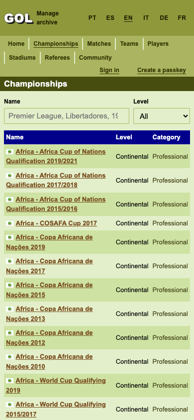

GolAberto — The Open Football Statistics Encyclopedia
An open football archive in Portuguese, Spanish, and English covering championships, phases, groups, qualification zones, match line-ups, referees, stadiums, and live-recounted standings tables across South American and world football. Latest product brief ↓
Archive link targets and fresh database fixture
Shared championship headings, side navigation, table cells, home championship lists and scorer links now have the existing 24px minimum target height. Fresh fixtures also include all 885 unambiguous, active 2026 archive player statistics.

Catalog · BeforeCatalog · AfterMatch · BeforeMatch · After
Stable filters, usable links, and a chart that keeps its space
Authentication buttons, facts and community links, and fixture links now keep the 24px target floor. The championship page imports its shared standings styles, odds selection uses visible native radio controls, and the rating chart keeps its plot, caption, and legend space during hydration.
Matches open near today, section date bars, and stacked probability timeline
Upcoming matches start at seven calendar days before today in Brasília with Previous/Next archive navigation, reader-timezone formatting, distinctive dark olive date section headings, and stacked Poisson win/draw/loss probability polygons with pointer-following score and event annotations.
GolAberto is an open database of football: every championship, its phases and groups, every game with its goals and line-ups, and the tables those games make. Nothing a reader sees is typed twice: a table is what its games say; a player's goals are the goals recorded in games; a referee's record is the games he whistled.